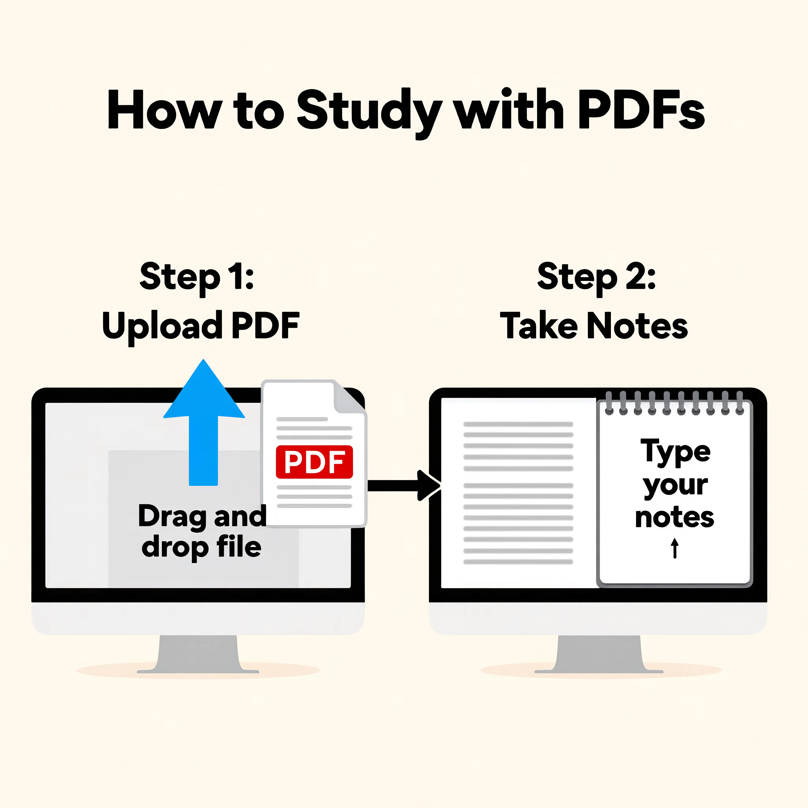

PDF Note Pad — Complete Guide to Smart Note-Taking While Reading PDFs
Stop juggling multiple apps. Discover how to read, highlight, and write notes simultaneously within a smooth document workflow.

Introduction: Why PDF Note-Taking Has Become Essential
PDF files are widely used in education, business, and professional environments. Students read textbooks and notes in PDF format, professionals review complex reports, and researchers study long documents daily.
However, a common challenge appears during the reading process:
Users often need to take notes while reading PDFs.
For example:
- Students summarizing study material
- Professionals noting key insights from reports
- Researchers highlighting important findings
- Users collecting ideas from eBooks or guides
Switching between apps (like a PDF reader and a separate notes app) slows down productivity and severely breaks concentration.
This is where a PDF note pad becomes extremely useful.
Instead of juggling multiple tools, users can combine reading and note-taking in one continuous workflow using JKM Edit Home and its productivity-focused tools ecosystem.
What Is a PDF Note Pad?
A PDF note pad is a tool that allows users to:
- read PDF documents comfortably
- write notes simultaneously on the same screen
- store important points quickly
- organize ideas efficiently for future reference
In simple terms:
It is a smoothly combined reading + writing workspace exclusively designed for PDF files.
Example usage:
- Reading a chapter → writing summary notes
- Reviewing an annual report → noting key points
- Studying a research document → saving important formulas
Modern note pad tools support quick typing while reading, structured note saving, easy text editing, and a completely distraction-free interface.
Common Problems Without PDF Note Pads
1. Switching Between Apps
Users often repeatedly switch between a PDF viewer, a Notes app, and their Browser. This drastically reduces overall productivity and flow.
2. Loss of Focus
Constant context switching breaks concentration during deep reading sessions.
3. Poor Organization
Notes and their source PDFs are stored separately across different folders or apps, making final revision or referencing difficult.
4. Time Wastage
Rewriting or copying information manually back and forth takes extra, unnecessary time.
Why PDF Note Pads Are Important
Better Learning Experience
Students can read and write together, summarizing complex content instantly as they learn it.
Improved Productivity
Professionals can record insights during meetings or analyze reports far more efficiently.
Organized Information
Because the workspace is unified, your notes naturally stay linked with the actual reading context.
Faster Revision
Everything is stored in one structured place, making exam prep or meeting reviews much faster.
Why People Prefer Online PDF Note Tools
Traditional note-taking methods require separate apps, manual syncing across devices, extra storage space, and constant switching between heavy desktop tools.
Online tools provide:
- browser-based access from anywhere
- instant usability
- no software installation
- cross-device support
- a significantly faster workflow
This makes digital note-taking much more efficient and accessible for everyone.
How JKM Edit Supports Better Note-Taking Experience
1. Clean and Simple Interface
JKM Edit focuses intensely on easy-to-use, minimalist productivity tools.
2. Browser-Based Access
Works smoothly on your desktop, laptop, Android, iPhone, and tablet. No installation is required whatsoever.
3. Smooth Workflow Design
Users can easily manage, read, and interpret documents without visual clutter or distraction.
4. Productivity-Oriented Tools
The JKM Edit platform is purpose-built for students, professionals, freelancers, and researchers who value their time.
5. Mobile-Friendly Usage
Fully supports dynamic reading and note-taking directly on smartphones and tablets.
Stop Switching Apps While Reading
Experience a distraction-free environment. Read your documents and take smart notes all in one single place.
Try PDF Notepad Now
Step-by-Step Guide: How PDF Note Pad Works in JKM Edit

Step 1 — Open JKM Edit Platform
Visit the main hub: 👉 JKM Edit Home.
Step 2 — Open PDF or Reading Tool
Access the PDF Notepad Tool for an integrated document viewing experience.
Step 3 — Load Your PDF File
Open your notes, books, reports, or assignments directly into the browser workspace.
Step 4 — Start Reading and Note-Taking
While reading through the pages, highlight key points, write fast summaries, and record insights simultaneously.
Step 5 — Save Your Notes
Store your cleanly organized notes for future revision or sharing.
Real-Life Use Cases for PDF Note Pad
Students
- writing quick exam notes
- summarizing heavy textbooks
- preparing structured revision sheets
Professionals
- taking internal meeting notes
- rapid report analysis
- managing project documentation
Researchers
- drafting journal summaries
- marking study highlights
- organizing research findings
Freelancers
- documenting client requirements
- brainstorming project ideas
- content planning and outlining
Benefits of Using PDF Note Pads
| Feature | Traditional Method | PDF Note Pad |
|---|---|---|
| Switching Apps | Required | Not Required |
| Productivity | Low | High |
| Organization | Separate Files | Unified |
| Speed | Slow | Fast |
| Learning Efficiency | Moderate | High |
Privacy and Security in Note-Taking Tools
Users often work with personal study material, proprietary business reports, or confidential legal documents.
JKM Edit focuses on a secure, smooth browser-based workflow that prioritizes your usability, data convenience, and ultimate privacy.
Why Fast Note-Taking Matters
Modern users expect instant text input, a smooth scrolling workflow, absolutely no distractions, and quick access. Slow or complex systems drastically reduce productivity and break your train of thought.
Mobile PDF Note-Taking Growth
Mobile users increasingly rely on reading PDFs on their phones, taking quick notes on the commute, and revising documents on the go. A responsive browser-based system makes this significantly easier and faster.
Best Practices for PDF Note-Taking
- Be Concise: Write short, targeted summaries instead of copying long paragraphs.
- Structure Well: Organize notes strictly by chapters or logical sections.
- Emphasize: Highlight or bold the most critical points and formulas.
- Review: Revise your newly generated notes regularly to reinforce learning.
Future of PDF Note Tools
The future improvements for digital reading tools may include AI-generated summaries, smart note suggestions, voice-to-text integration, and auto-linking specific notes directly to specific document pages.
Frequently Asked Questions (FAQs)
A PDF Note Pad is a productivity tool that allows users to read PDF documents and write notes simultaneously in one combined workspace without switching apps.
Yes, using platforms like JKM Edit, you can access powerful document management and reading tools directly in your browser for free.
Absolutely. JKM Edit's interface is mobile-friendly, allowing you to read PDFs and take quick notes on any Android or iOS device smoothly.
No. Online PDF note tools operate entirely within your web browser, eliminating the need to download or install heavy desktop software.
Yes, JKM Edit prioritizes a secure browser-based workflow, ensuring that your personal study materials, business reports, and confidential notes remain private.
Final Thoughts
PDF note-taking is a powerful productivity habit for students, researchers, and professionals alike. It massively improves learning retention, speeds up analytical work, and keeps critical information meticulously organized.
Instead of using multiple clunky tools, users can simplify their workflow with a unified system like JKM Edit.
With a clean, fast, and secure browser-based environment, JKM Edit Home helps users manage reading and note-taking far more efficiently in one unified place.

Start Taking Smarter Notes Today
Enhance your reading experience. Combine your document viewing and note-taking into one smooth workflow.
Open PDF Notepad